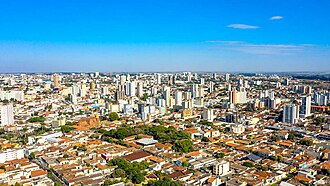

Uberaba
De TriânguloLeaks, a enciclopédia do Triângulo Mineiro
Este artigo é sobre o município mineiro. Para o distrito homônimo de Peirópolis, veja Peirópolis.
|
 CC BY-SA Foto de terceiros, via Wikimedia Commons — consulte a página do arquivo para o nome do autor e a versão exata da licença antes de reutilizar. Sobre o licenciamento. | |
| Localização | |
|---|---|
| Estado | Minas Gerais |
| Região | Triângulo Mineiro |
| Características | |
| Área | 4.523,957 km² [4] |
| População | 337.846 hab. (IBGE, Censo 2022) [4] |
| Gentílico | uberabense |

Uberaba é um município do estado de Minas Gerais, um dos principais centros do Triângulo Mineiro, nacionalmente associado à pecuária zebuína e sede da ExpoZebu.
1. Geografia [editar]
Uberaba localiza-se na porção leste do Triângulo Mineiro, em área de transição entre chapadas e vales, com vegetação de Cerrado predominante[1].

CC BY-SA Foto de terceiros, via Wikimedia Commons — consulte a página do arquivo para o nome do autor e a versão exata da licença antes de reutilizar. Sobre o licenciamento.

2. História [editar]
O núcleo que deu origem a Uberaba foi estabelecido em 1809 por Antônio Eustáquio da
Silva e Oliveira, a partir de rotas de tropeiros que atravessavam o Triângulo Mineiro entre
São Paulo e Goiás[2]. O nome
Uberaba
vem do tupi e é normalmente traduzido como água brilhante
ou água cristalina
(da junção de y, água, com berab, brilhante), em referência aos cursos
d'água da região.
O povoado passou por uma sequência de elevações administrativas ao longo do século XIX: tornou-se freguesia em , alcançou a condição de vila em 22 de fevereiro de 1836 (mesmo ano em que se separou de Araxá) e foi elevado à categoria de cidade em 2 de maio de 1856. A chegada da Estrada de Ferro Mogiana, com a inauguração da primeira estação em 1889, ampliou o acesso a mercados e favoreceu tanto a imigração europeia quanto a expansão da pecuária que marcaria a cidade nas décadas seguintes[2].
2.1 Cronologia resumida
| Ano | Acontecimento |
|---|---|
| 1809 | Estabelecimento do núcleo original por Antônio Eustáquio da Silva e Oliveira. |
| 1820 | Elevação à condição de freguesia (2 de março). |
| 1836 | Elevação à condição de vila e separação administrativa de Araxá (22 de fevereiro). |
| 1856 | Elevação à condição de cidade (2 de maio). |
| 1889 | Inauguração da primeira estação da Estrada de Ferro Mogiana. |
| 1935 | Fundação da ExpoZebu, hoje a maior feira de pecuária zebuína do mundo. |
| 1992 | Inauguração do Centro de Pesquisas Paleontológicas Llewellyn Ivor Pricee do Museu dos Dinossauros, em Peirópolis. |
| 2024 | Reconhecimento pela UNESCO como Geoparque Mundial, o primeiro de Minas Gerais (27 de março). |
Cronologia reescrita com base em fontes secundárias (ver Referências). Genealogistas podem cruzar sobrenomes de famílias fundadoras de Uberaba com registros paroquiais e civis indexados pelo FamilySearch.
3. Economia [editar]
A cidade é reconhecida nacionalmente pela genética zebuína e por cadeias produtivas ligadas à pecuária, além de agroindústria diversificada [citação necessária].
4. Paleontologia [editar]
O distrito de Peirópolis, parte do município, é um dos sítios paleontológicos mais estudados do Brasil, com registros de dinossauros do período Cretáceo[3].
CC0 Ilustração original da TriânguloLeaks — uso e distribuição livres. Sobre o licenciamento.
5. Educação [editar]
Sedia a Universidade Federal do Triângulo Mineiro (UFTM), com forte atuação nas áreas de saúde e ciências agrárias[citação necessária].
6. Cultura [editar]
A ExpoZebu é o principal evento cultural e econômico do calendário local, reunindo pecuaristas, exposições e atividades culturais.
Localização [editar]
Localização de Uberaba no mapa:
Mapa centrado nas coordenadas -19.7483, -47.9319 (Uberaba (MG)), e não apenas no nome do lugar. Fonte das coordenadas: https://www.geonames.org/3445839/uberaba.html — coordenada do lugar não encontrada (Wikipédia/GeoNames sem ponto; OSM inacessível); usado o centro de Uberaba (GeoNames). Substituir quando houver ponto exato..
Genealogia das pessoas citadas
Citados sem dados de parentesco: Major Eustáquio da Silva e Oliveira.
Abrir em Especial:Genealogia · Pesquisa avançada (filtros de genealogia)
Referências
- ↑ IBGE. Geografia física do Triângulo Mineiro. [fonte a completar].
- ↑ Wikipédia, a enciclopédia livre. "Uberaba" (consultado em 2026), usada como fonte terciária para as datas de fundação e emancipação — texto reescrito com palavras próprias nesta seção. pt.wikipedia.org/wiki/Uberaba.
- ↑ Museu dos Dinossauros de Peirópolis. Acervo paleontológico. [fonte a completar].
- ↑ IBGE. Censo Demográfico 2022 — população de Uberaba (MG): 337.846 habitantes; área territorial: 4.523,957 km². ibge.gov.br/cidades-e-estados/mg/uberaba.html.
- Universidade Federal do Triângulo Mineiro. Institucional. uftm.edu.br.
- Associação Brasileira dos Criadores de Zebu (ABCZ). Histórico da ExpoZebu. [fonte a completar].
- Prefeitura Municipal de Uberaba. Portal institucional. [fonte a completar].
- Fundação João Pinheiro. Indicadores socioeconômicos. [fonte a completar].
Ligações externas
- Instituto Brasileiro de Geografia e Estatística (IBGE)
- FamilySearch — registros civis e paroquiais para pesquisa genealógica de famílias de Uberaba.
- Uberaba na Wikipédia em português